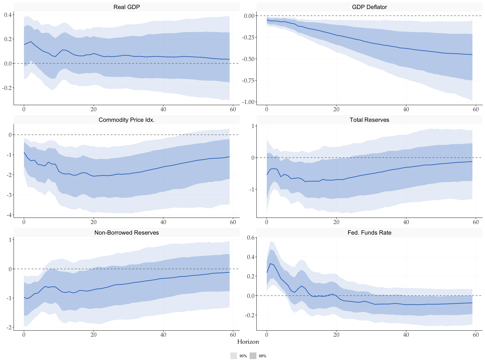
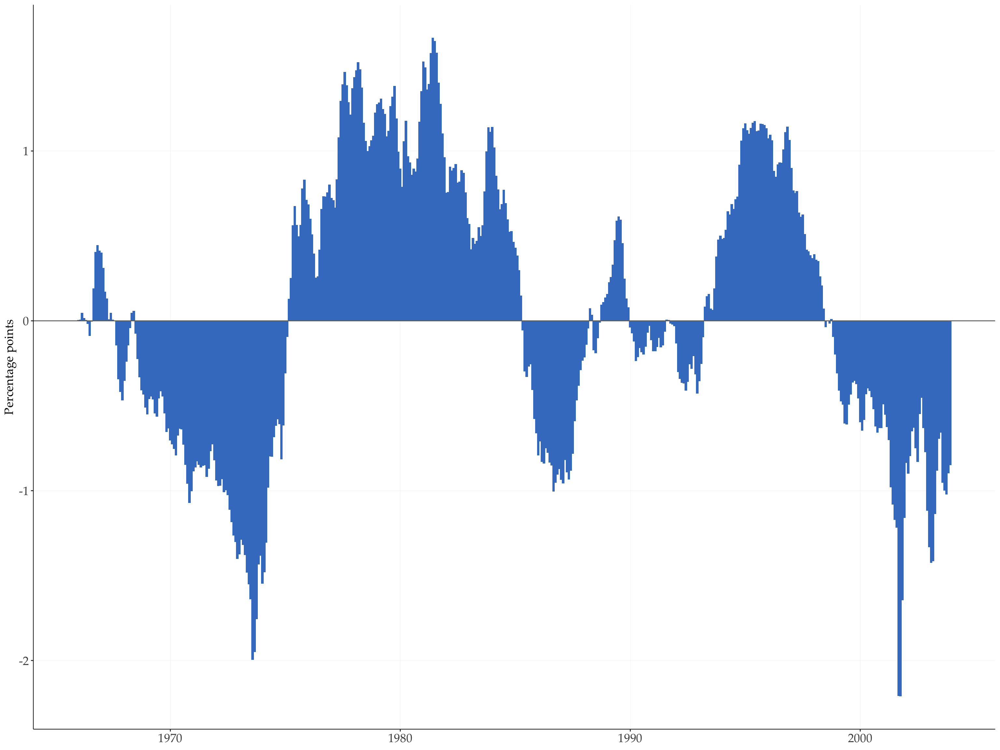

library(tidyverse)
library(tidyMacro)
theme_set(fThemeTidyMacro())Identification via sign restrictions
1 The identification problem
The reduced-form residuals of VAR: \(u_t\) are a linear combination of orthogonal structural shocks \(\varepsilon_t\) with unit variance, so their covariance matrix is
\[\Sigma_u = \mathbb{E}\left[u_t u_t'\right] = B\,\mathbb{E}\left[\varepsilon_t \varepsilon_t'\right] B' = BB'.\]
Identification amounts to finding a \(B\) that satisfies \(\Sigma_u = BB'\). Because \(\Sigma_u\) is symmetric it delivers only \(k(k+1)/2\) independent equations for the \(k^2\) unknowns in \(B\), so the system is underdetermined. The shortfall has a clean geometric structure: fix any \(B_0\) with \(\Sigma_u = B_0B_0'\), and for any orthogonal \(Q\) with \(QQ' = I_k\),
\[(B_0Q)(B_0Q)' = B_0\,\underbrace{QQ'}_{=\,I_k}\,B_0' = B_0B_0' = \Sigma_u .\]
The solution set is therefore the whole orbit \(\{B_0Q : QQ' = I_k\}\), with \(k(k-1)/2\) free parameters. Every identification scheme is a rule for picking one \(Q\). The data pin down the shape of the residual covariance ellipse but not the directions of the structural axes inside it; identification anchors those directions.
2 Sign restrictions1
Zero restrictions can be motivated by theory, but theory rarely implies them directly, and the implied zeros are often hard to defend. Sign restrictions exploit a weaker prior: beliefs about the sign that certain shocks should have on certain variables (Faust 1998; Canova and De Nicoló 2002; Uhlig 2005). The restrictions narrow the parameter space without selecting a unique structural model, so sign-restricted VARs are set-identified.
The algorithm has three steps.
Draw an orthogonal matrix \(Q_j\). Generated as the QR factorization of a \(k \times k\) matrix of i.i.d. standard normals, with the sign of each column of \(Q\) flipped so that the corresponding diagonal element of \(R\) is positive. That normalization makes the factorization unique and spreads draws uniformly over the rotation group (Haar measure).
Form a candidate impact matrix. Let \(\Sigma_u = PP'\) be the Cholesky factorization. Then \[\Sigma_u = PP' = PQ_jQ_j'P' = \underbrace{(PQ_j)}_{B_j}\underbrace{(PQ_j)'}_{B_j'},\] so \(B_j = PQ_j\) solves the identification problem for any orthogonal \(Q_j\). The implied shocks \(\varepsilon_{jt} = B_j^{-1}u_t\) are orthogonal with unit variance, since \(B_j^{-1}\Sigma_u(B_j^{-1})' = I_k\). Note \(B_j\) is no longer triangular.
Check the restrictions. Retain \(B_j\) if the implied impulse responses satisfy the imposed signs over the constrained horizons; otherwise discard and draw again.
After collecting many accepted draws you have a distribution of \(B_j\), and of the implied impulse responses, variance decompositions and historical decompositions, that summarizes the identified set.
NoteSet identification versus point identification
Cholesky and long-run schemes are point-identified: a unique \(B\) satisfies the restrictions, and the only source of uncertainty is sampling variability. Sign restrictions are set-identified: many \(B_j\) are simultaneously consistent with the restrictions and the data, and they represent genuinely different structural models. Two consequences follow.
First, the median response across accepted draws need not converge to a unique value as \(T \to \infty\), because the identified set remains non-singleton even in the population. It describes the location of the identified set, not a point estimate of a structural parameter.
Second, the width of a credible band reflects both sampling uncertainty and the width of the identified set. The two cannot be disentangled without further restrictions (Arias et al. 2018; Giacomini and Kitagawa 2021).
2.1 Inference
Parameter uncertainty for sign-restricted models is handled the Bayesian way, following Uhlig (2005). The prior over \((\Phi, \Sigma_u)\) is conjugate Normal-inverse-Wishart, which yields a closed-form posterior in the same family. For each accepted draw \(d\):
- Draw \(\Sigma_u^{(d)}\) from the marginal inverse-Wishart posterior.
- Conditional on \(\Sigma_u^{(d)}\), draw \(\Phi^{(d)}\) from the normal conditional posterior.
- Compute the Cholesky factor \(P^{(d)}\) and draw a Haar-uniform \(Q_j\).
- Form \(B_j^{(d)} = P^{(d)}Q_j\) and check the sign restrictions.
- Retain if satisfied; otherwise return to step 3.
Steps 1–2 run only when inference = 1. With inference = 0 the reduced form stays at its OLS values and only steps 3–5 execute, so the spread of accepted draws reflects identification uncertainty alone. Frequentist alternatives exist (Granziera et al. 2018; Giacomini and Kitagawa 2021) but are not implemented here, and in set-identified models Bayesian and frequentist inference do not coincide even asymptotically, because the prior on \(Q\) is never updated by the data (Moon and Schorfheide 2012).
3 Setup
This helper turns a data tibble into the numeric matrix the estimator expects.
# Drop the date column and hand the estimator a plain T x k matrix.
as_var_matrix <- function(data) {data |> select(-Date) |> as.matrix()}4 Uhlig (2005): sign restrictions
What are the effects of monetary policy on output? Uhlig (2005) revisits the question with a deliberately agnostic approach: rather than timing assumptions or long-run restrictions, he imposes only sign restrictions that capture conventional wisdom about monetary transmission, and lets the data speak about output.
The model is a VAR(12) with a constant on monthly US data, 1965m1–2003m12, in six variables: real GDP (log, interpolated to monthly), the GDP deflator (log), a commodity price index (log), total reserves (log), non-borrowed reserves (log) and the federal funds rate (percent). Log-level variables are scaled by 100 so every response reads in percent.
data(Uhlig2005)
uhlig <- Uhlig2005 |>
mutate(across(-c(Date, `Fed. Funds Rate`), \(x) 100 * x))
uhlig |> head(3)
#> # A tibble: 3 × 7
#> Date `Real GDP` `GDP Deflator` `Commodity Price Idx.` `Total Reserves`
#> <date> <dbl> <dbl> <dbl> <dbl>
#> 1 1965-01-01 826. 292. 2019. 248.
#> 2 1965-02-01 826. 292. 2018. 248.
#> 3 1965-03-01 827. 292. 2016. 248.
#> # ℹ 2 more variables: `Non-Borrowed Reserves` <dbl>, `Fed. Funds Rate` <dbl>A contractionary shock raises the funds rate and lowers the price level, commodity prices and non-borrowed reserves for six months. Real GDP, the variable of interest, and total reserves are left free. That is the whole point of the exercise: no restriction is placed on the response the paper is asking about. Package design: Rows are variables, columns are shocks. +1 the response must be non-negative, -1 non-positive, 0 unrestricted (not zero restriction).
# `ff_rate` is the matching address on the row side: rows follow the data
ff_rate <- 6
# The address of the shock: which column of `sign` carries the monetary policy restrictions, and therefore which structural shock is the monetary policy shock. Nothing makes column 1 special; the sign pattern written into it is what does the identifying.
mp_shock <- 1
sign_uhlig <- matrix(0, nrow = 6, ncol = 6, dimnames = list(names(uhlig)[-1], NULL))
sign_uhlig[, mp_shock] <- c(
`Real GDP` = 0,
`GDP Deflator` = -1,
`Commodity Price Idx.` = -1,
`Total Reserves` = 0,
`Non-Borrowed Reserves` = -1,
`Fed. Funds Rate` = 1
)
sign_uhlig[, , drop = FALSE]
#> [,1] [,2] [,3] [,4] [,5] [,6]
#> Real GDP 0 0 0 0 0 0
#> GDP Deflator -1 0 0 0 0 0
#> Commodity Price Idx. -1 0 0 0 0 0
#> Total Reserves 0 0 0 0 0 0
#> Non-Borrowed Reserves -1 0 0 0 0 0
#> Fed. Funds Rate 1 0 0 0 0 0Only the first column carries non-zero entries; the other five shocks are left unrestricted. sr_hor = 6 enforces the restrictions at horizons \(h = 0,\dots,5\).
The monetary policy shock sits in the first column purely as a labeling convention. Rows are ordered, because they follow the variables in the data, which is why the funds rate appears in row 6; columns are not, because sign restrictions impose no recursive ordering on the shocks, so shock 1 is “monetary policy” only in the sense that the sign pattern we wrote into that column is the one we are willing to defend for a monetary policy shock.
sr_uhlig <- fSignRestr(
as_var_matrix(uhlig),
p = 12,
c = 1,
sign = sign_uhlig,
store_draws = FALSE, # medians/bands and structural draws suffice for this page
nsteps = 60, # 5-year horizon, impact included
ndraws = 500, # accepted draws
sr_hor = 6, # restrictions bind at horizons 0-5
conf = c(68, 90), # 68% is the paper's convention; 90% also reported
inference = 1, # draw the reduced form from the posterior
seed = 42
)fPlotIRFSign(
sr_uhlig,
shock = mp_shock,
labels = "Sign restrictions",
conf = c(68, 90),
facet_ncol = 2,
facet_scales = "free"
)
The key finding is that the output response is ambiguous. The restricted variables behave as assumed (the funds rate rises, prices and non-borrowed reserves fall), but the real GDP band spans both positive and negative values throughout. Under minimal identifying restrictions the data do not deliver a clear verdict on the output effects of monetary policy.
conf accepts several coverage levels at once. The package default is 90%; both Uhlig (2005) and Antolín-Díaz and Rubio-Ramírez (2018) use 68%, which is requested explicitly here; asking for c(68, 90) adds the wider band and leaves IRinf/IRsup at the first level, so existing code is unaffected. All requested bands are computed together in C++, including when store_draws = FALSE. Every requested level is stored in sr_uhlig$bands, and fPlotIRFSign() refuses to draw a level that was not requested rather than silently showing the wrong coverage.
Two things are worth keeping straight when reading the figure. The restricted responses carry their imposed sign over \(h = 0,\dots,5\) by construction; their behaviour at longer horizons, and the whole path of real GDP, is governed by the estimated reduced-form dynamics. And the bands are not confidence intervals around a point estimate: they summarize identification uncertainty and, because inference = 1, sampling uncertainty as well.
4.1 Two ways to summarize the set
NoteThe Fry-Pagan median-target rotation
IRmed is the element-wise median: each entry, the response of variable \(i\) to shock \(j\) at horizon \(h\), is the median of that entry across accepted draws. It is a convenient summary of central tendency, but the associated impact matrix Bmed is a Frankenstein object. It corresponds to no accepted draw and will in general not satisfy \(\Sigma_u = B_{\text{med}}B_{\text{med}}'\), so it is not a valid structural model: FEVD shares need not sum to one, and historical decompositions need not reproduce the data.
Fry and Pagan (2011) proposed instead selecting the single accepted draw closest to the element-wise median. That median-target rotation, stored in Bfp / IRfp / VDfp, is a genuine structural representation: it satisfies all the sign restrictions and \(\Sigma_u = B_{j^*}B_{j^*}'\) by construction. The cost is a different arbitrariness: it picks one draw out of the set.
The two differ for a geometric reason. Admissible impact matrices lie on a curved set (the orthonormal rotations of a fixed Cholesky factor); a coordinate-wise median is generally not a point of that set. The gap grows with the dimension of the VAR and the width of the identified set, and it is not an artefact of parameter uncertainty: it persists with inference = 0.
tidyMacro minimizes \(\lVert B_j - B_{\text{med}} \rVert_F\) over the impact matrices, which is what the toolbox code does.
tibble(
variable = sr_uhlig$varnames,
Bmed = sr_uhlig$Bmed[, mp_shock],
Bfp = sr_uhlig$Bfp[, mp_shock]
) |>
mutate(difference = Bfp - Bmed)
#> # A tibble: 6 × 4
#> variable Bmed Bfp difference
#> <chr> <dbl> <dbl> <dbl>
#> 1 Real GDP 0.154 0.161 0.00728
#> 2 GDP Deflator -0.0481 -0.0240 0.0241
#> 3 Commodity Price Idx. -0.873 -1.63 -0.758
#> 4 Total Reserves -0.544 -1.61 -1.07
#> 5 Non-Borrowed Reserves -0.975 -1.54 -0.567
#> 6 Fed. Funds Rate 0.236 0.0971 -0.139The claim that Bmed is not a valid structural model is easiest to see with parameter uncertainty switched off, where every draw shares the same OLS \(\hat\Sigma_u\) and the only thing varying across draws is the rotation:
sr_fixed <- fSignRestr(
as_var_matrix(uhlig),
p = 12,
c = 1,
sign = sign_uhlig,
store_draws = FALSE,
nsteps = 60,
ndraws = 500,
sr_hor = 6,
conf = 68,
inference = 0, # rotations only, reduced form held at OLS
seed = 42
)
tibble(
matrix = c("Bmed", "Bfp"),
max_abs_dev = c(max(abs(sr_fixed$Bmed %*% t(sr_fixed$Bmed) - sr_fixed$var$sigma)),
max(abs(sr_fixed$Bfp %*% t(sr_fixed$Bfp) - sr_fixed$var$sigma)))
)
#> # A tibble: 2 × 2
#> matrix max_abs_dev
#> <chr> <dbl>
#> 1 Bmed 7.13e+ 0
#> 2 Bfp 2.66e-15Bfp reproduces \(\Sigma_u\) to machine precision; Bmed misses it by an amount of the same order as \(\Sigma_u\) itself. The gap is not an artefact of parameter uncertainty: it is there even when the reduced form is fixed, because a coordinate-wise median of points on a curved set need not lie on that set.
5 Historical decomposition
Once a single impact matrix is selected, the usual structural objects follow. fHDShock() defaults to the Fry-Pagan draw for exactly this reason: because it is a genuine structural representation, its contributions reproduce the observed series exactly, which the element-wise median would not.
hd <- fHDShock(sr_uhlig, y = as_var_matrix(uhlig))tibble(Date = uhlig$Date, contribution = hd$shock[, ff_rate, mp_shock]) |>
drop_na() |>
ggplot(aes(Date, contribution)) +
geom_col(fill = "#407EC9", width = 40) +
geom_hline(yintercept = 0, colour = "#707372") +
labs(x = NULL, y = "Percentage points")
6 References
Antolín-Díaz, Juan, and Juan F. Rubio-Ramírez. 2018. “Narrative Sign Restrictions for SVARs.” American Economic Review 108 (10): 2802–29.
Arias, Jonas E., Juan F. Rubio-Ramírez, and Daniel F. Waggoner. 2018. “Inference Based on Structural Vector Autoregressions Identified with Sign and Zero Restrictions.” Econometrica 86 (2): 685–720.
Canova, Fabio, and Gianni De Nicoló. 2002. “Monetary Disturbances Matter for Business Fluctuations in the G-7.” Journal of Monetary Economics 49 (6): 1131–59.
Faust, Jon. 1998. “The Robustness of Identified VAR Conclusions about Money.” Carnegie-Rochester Conference Series on Public Policy 49: 207–44.
Fry, Renee, and Adrian Pagan. 2011. “Sign Restrictions in Structural Vector Autoregressions: A Critical Review.” Journal of Economic Literature 49 (4): 938–60.
Giacomini, Raffaella, and Toru Kitagawa. 2021. “Robust Bayesian Inference for Set-Identified Models.” Econometrica 89 (4): 1519–56.
Granziera, Eleonora, Hyungsik Roger Moon, and Frank Schorfheide. 2018. “Inference for VARs Identified with Sign Restrictions.” Quantitative Economics 9 (3): 1087–121.
Moon, Hyungsik Roger, and Frank Schorfheide. 2012. “Bayesian and Frequentist Inference in Partially Identified Models.” Econometrica 80 (2): 755–82.
Uhlig, Harald. 2005. “What Are the Effects of Monetary Policy on Output? Results from an Agnostic Identification Procedure.” Journal of Monetary Economics 52 (2): 381–419.
Footnotes
Sign restrictions mostly follow from the MATLAB Toolbox of Cesa-Bianchi: https://ambrogiocesabianchi.com/var-toolbox.html↩︎